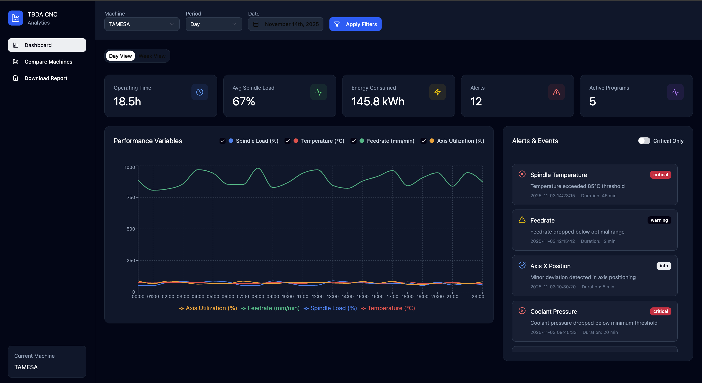

Frontend Overview
This section describes the frontend architecture, mockups, and components
UX Draft (presented on 3/11)
User and Goals
Users - Machine operators and engineers - Analysts monitoring performance and energy use
Their goals: - Identify when the machine is operating, idle, or in error - Visualize KPIs like energy per program, cycle duration, spindle load - See alerts or anomalies in real time
Key Information to show
- Machine State: operating / standby / emergency / stopped
- Program Info: name, progress, tool used
- Performance Metrics: spindle load, temperature, feedrate, operation time
- Alerts: overheat, emergency, vibration
- Energy: estimated energy per program
UX Draft

Feedback from the professor
We don’t have access to current data so we won’t be able to show that. More interesting is to be able to go back in time and see which programs and data points during certain dates etc.